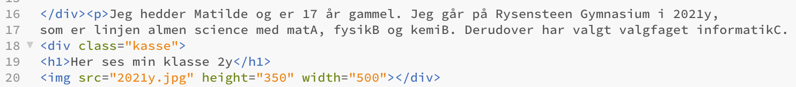

Mit informatik portfolio
Webteknologi
I dette emne har vi lavet hjemmesider i programmet "Brackets", hvor man selv kan designe sin hjemmeside i det der kaldes en CSS-fil og dermed få ens hjemmeside til at se ud som man gerne vil have den. Selve hjemmesiden er det der kaldes en html-fil.
Kode
Her har jeg nogle linjer af min kode fra hovedmenuen, som jeg gerne vil forklare hvad gør:

Dette stykke kode er det der beskriver indholdet på min hovedmenu.
CSS-fil
En CSS-fil er her alt design sker, det er her jeg kan vælge farve på min baggrund, tekst eller tekstboks. Det er også her jeg designer de kasser jeg vil have sat ind på min hjemmeside og den menubar jeg har i toppen af hjemmesiden. Her er et stykke kode fra min CSS-fil:
Dette stykke kode er det der viser min ene kasse, som er kassen til venstre på alle undersider.
Mere dybtgående beskrivelse:
linje 16+17: Dette er den korte tekst jeg har skrevet om mig selv.
linje 18: Her "kalder" jeg så på den kasse som jeg har designet inde i min CSS-fil som gøres ved hjælp af div (mere om dette længere nede)
linje 19: Overskriften der ses inde i kassen, nemlig "Her ses min klasse 2y"
linje 20: Her "kalder" jeg så på det billede jeg gerne vil have sat ind, som ligger i min webteknologimappe på skrivebordet og jeg bestemmer også højden og bredden på billedet for at det ser optimalt ud.
CSS-fil:
linje 34: Her laves navnet på kassen med en div
linje 35: Her laves kanten på kassen som jeg laver sort og vælger hvor tyk den skal være
linje 36: Her bestemmer jeg hvor bred kassen skal være
linje 37: Her bestemmer jeg hvor tæt teksten skal være på kanten af kassen.
linje 38: Her bestemmer jeg baggrundsfarven på kassen
linje 39: Her bestemmer jeg kassens afstand fra kanten af hjemmesiden